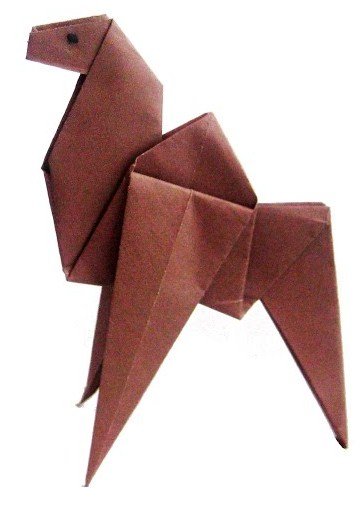
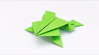

Origami Designs
Welcome
Here You can learn how to make different origamies
About Us
Follow Us
Camel

- Fold the paper in half
- Fold the paper in half again
- Open the top flap of paper over to the right
- Squash Fold this flap down
- Turn the paper over
- Open the top flap of paper over to the left and Squash Fold it down
- Fold and Unfold the sides and the top along the dotted lines. You’ll use these creases in the next step
- Open up the top layer of paper and fold it up using the crease from the previous step
- Fold in both sides along the existing creases making a Petal Fold
- Turn the paper over
- Repeat steps 7-9 on this side also
- Fold both sides to the centre along the dotted lines. Then repeat on the other side
- Inside Reverse Fold up both sides of the paper
- Reverse Fold the back part down to make the back legs
- Fold the top flap of paper down and repeat on the other side to make the front legs
- Reverse Fold the tip down to make the head
- Inside Reverse Fold the tip of the head
- Fold the back of the leg inside the model along the dotted line. Repeat on the other side
- The Camel is completed
Some Facts About Camels
Frog

- Fold the paper in half diagonally
- Fold the paper in half again
- Open the top flap of paper over to the right
- Squash Fold this flap flat
- Turn the paper over
- Open the top flap of paper over to the left and Squash Fold it flat
- Open the flap of paper on the right over to the left and Squash Fold it flat
- Fold a couple of flaps over and then repeat step 7 on the 3 remaining flaps Squash Folding each flat
- Make a Petal Fold along the dotted lines. Fold in the sides first to give you creases to make the Petal Fold easier
- Finish the Petal Fold and then repeat on the remaining 3 flaps of paper. This will give you a complete Frog Base
- Fold both sides of the paper to the centre along the dotted lines
- Repeat step 11 on the remaining 3 sections
- Make an Inside Reverse Fold on each side along the dotted lines. This will bring the front two legs up
- Make two Inside Reverse Folds on the front legs bringing them out to the side. Then make two Inside Reverse Folds on the back legs also bringing them out to the side
- Make two more Inside Reverse Folds on the front legs and two more on the back legs
- Fold the top part of the paper underneath the frog. If you’re up to it you can try making an Open Sink here instead. It’ll look a little bit nicer when you’re done. Make two more Inside Reverse Folds on the back legs
- The Frog is completed
Some Facts About Frogs
Pigeon

- Fold the paper in half and then unfold it
- Fold the paper in half the other way
- Fold both layers of paper to the right along the dotted line
- Fold the top layer of paper to the left along the dotted line
- Fold the model in half down along the dotted line
- Fold the top flap of paper up along the dotted line and then repeat on the other side
- Fold the paper along the dotted line and then unfold it
- Make an Inside Reverse Fold using the crease from the previous step
- The Pigeon is completed
Some Facts About Pigeons
Panda
- Fold and unfold the paper in half both ways
- Fold both sides in along the dotted lines
- Fold and unfold the bottom and top along the dotted lines
- Fold the paper behind along the dotted line
- Turn the paper over
- Fold the top of the paper down along the dotted line
- Fold the paper up along the dotted line
- Fold and unfold the paper in half and leave slightly folded to give a 3D look
- The Panda is completed
Some Facts About Pandas
Parrot

- Fold the paper in half and unfold it. Then fold both sides in to the centre and then unfold them
- Fold both sides in to the centre along the dotted lines
- Make a Rabbit Ear Fold on each side resulting in a Fish Base
- Fold the flaps out along the dotted lines
- Fold both sides in along the dotted lines
- Fold the model in half
- Fold the paper behind along the dotted line
- Make 3 folds along the 3 dotted lines
- Make a Pleat Fold and then one more fold at the tip of the beak
- The Parrot is completed
Some Facts About Parrots